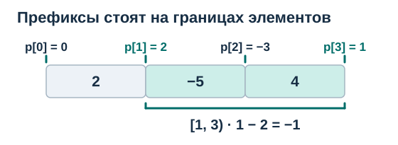

Префиксные суммы
Как получить сумму участка одним вычитанием
Пусть в массиве [2, −5, 4] нужно много раз находить суммы разных участков. Заранее посчитаем сумму первых k элементов для каждого возможного k. Такую сумму называют префиксной. В формулах и на схеме обозначим таблицу через p, а в коде C++ назовём её prefix. Пустой префикс имеет длину 0 и сумму 0.
Сколько взяли элементов, k |
0 | 1 | 2 | 3 |
|---|---|---|---|---|
Сумма первых k, p[k] |
0 | 2 | −3 | 1 |
Найдём сумму на участке [1, 3), то есть элементов с индексами 1 и 2. В p[3] уже входят все три элемента. Вычтем p[1], чтобы убрать первый элемент. Получим 1 − 2 = −1, столько же даёт прямое сложение −5 + 4.

Выбери границы суммы
Передвинь границу и проверь, какие числа остались в полуинтервале. Затем измени средний элемент и проследи, какие префиксы пересчитались.
При построении процессор может держать текущую сумму в регистре и записывать очередной результат по следующему адресу. При запросе достаточно прочитать из готовой таблицы два значения, даже если между ними миллион элементов.
Для любого участка [left, right) ответ равен p[right] − p[left]. Для пустого участка границы совпадают, и результат равен нулю.
Функция prefix_sums за один проход строит таблицу длины n + 1. Построение занимает O(n) времени и памяти. Затем каждый вызов range_sum занимает O(1). Для q запросов получаем O(n + q) времени вместо O(nq) при повторном подсчёте. Если изменить элемент массива, придётся обновить затронутые префиксы.
C++
#include <cstddef>
#include <vector>
using std::size_t;
using std::vector;
using Int = long long;
using Numbers = vector<Int>;
Numbers prefix_sums(const Numbers& values) {
Numbers prefix{0};
for (Int value : values) prefix.push_back(prefix.back() + value);
return prefix;
}
Int range_sum(const Numbers& prefix, size_t left, size_t right) {
return prefix[right] - prefix[left];
}
Тот же алгоритм на Python
def prefix_sums(values):
prefix = [0]
for value in values:
prefix.append(prefix[-1] + value)
return prefix
def range_sum(prefix, left, right):
return prefix[right] - prefix[left]
Как сложить числа в прямоугольнике
В двумерном случае p[i][j] хранит сумму прямоугольника от левого верхнего угла до строки i и столбца j, исключая их. Первая строка и первый столбец таблицы сумм нулевые. Например, p[1][2] = 3 — сумма первых двух чисел верхней строки.
Исходная таблица Префиксные суммы
1 2 3 0 0 0 0
4 -5 6 0 1 3 6
0 5 2 11
При построении таблицы идём по строке и накапливаем row_sum от её начала. К этой сумме прибавляем уже посчитанный прямоугольник прямо над ней.
Чтобы получить сумму строк [top, bottom) и столбцов [left, right), достаточно четырёх чисел.
- Берём
p[bottom][right]. Туда входит всё до правого нижнего угла нужного прямоугольника. - Вычитаем
p[top][right]сверху иp[bottom][left]слева. - Прибавляем
p[top][left]. Этот угол попал в оба вычтенных прямоугольника.
Например, выберем обе строки и два правых столбца. В них лежат 2, 3, −5 и 6. По таблице получаем 11 − 0 − 5 + 0 = 6. Для таблицы h × w построение занимает O(hw) времени при положительных размерах. Таблица префиксов занимает (h + 1)(w + 1) ячеек, запрос — O(1) времени.
C++
#include <cstddef>
#include <vector>
using std::size_t;
using std::vector;
using Int = long long;
using Numbers = vector<Int>;
using Matrix = vector<Numbers>;
Matrix rectangle_prefix(const Matrix& values) {
size_t rows = values.size(), column_count = values.empty() ? 0 : values[0].size();
Matrix prefix(rows + 1, Numbers(column_count + 1));
for (size_t row = 0; row < rows; ++row) {
Int row_sum = 0;
for (size_t col = 0; col < column_count; ++col) {
row_sum += values[row][col];
prefix[row + 1][col + 1] = prefix[row][col + 1] + row_sum;
}
}
return prefix;
}
Int rectangle_sum(const Matrix& prefix, size_t top, size_t left,
size_t bottom, size_t right) {
return prefix[bottom][right] - prefix[top][right] - prefix[bottom][left] + prefix[top][left];
}
Тот же алгоритм на Python
def rectangle_prefix(values):
rows, column_count = len(values), len(values[0]) if values else 0
prefix = [[0] * (column_count + 1) for _ in range(rows + 1)]
for row in range(rows):
row_sum = 0
for col in range(column_count):
row_sum += values[row][col]
prefix[row + 1][col + 1] = prefix[row][col + 1] + row_sum
return prefix
def rectangle_sum(prefix, top, left, bottom, right):
return prefix[bottom][right] - prefix[top][right] - prefix[bottom][left] + prefix[top][left]